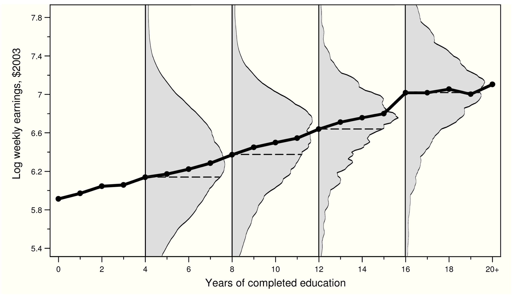

EC655
Justin Smith
Wilfrid Laurier University
Fall 2022
Questions in economics often involve explaining a variable in terms of others
How does age of school entry affect test scores?
Does childhood health insurance affect adult health?
Does foreign competition affect domestic innovation?
Often we are interested in the causal relationship
The independent effect of one variable on another
Causal relationships are important for policy
Econometrics provides a framework for examining these relationships
Strong focus on causality
We discussed this and will revisit it
As noted above, we want to relate dependent variable \(y\) to independent variables \(\mathbf{x}\)
Specifically want to know systematically what happens to \(y\) when \(\mathbf{x}\) changes
Difficult because \(y\) and \(\mathbf{x}\) are random variables
\(y\) can take many different values for each \(\mathbf{x}\)
This randomness makes it difficult to see relationships
One way to see a systematic pattern is to focus on average \(y\) at each \(\mathbf{x}\)
Does \(y\) change on average as we increase \(\mathbf{x}\)?
Ex: Does academic achievement fall on average as we increase class size?
Mathematically, this is the conditional expectation \(\mathbf{E}[y|\mathbf{x}]\)
Idea is illustrated in figure
Log earnings on vertical axis, years of schooling on horizontal
Grey shaded areas are distribution of log earnings at each level of schooling
Big spread incomes for each level of schooling
Hard to see relationship
Black line is the conditional mean of earnings at each level of schooling
Increasing pattern between school and earnings is much easier to see
Note how it is not linear

The Conditional Expectation Function (CEF) highlights the pattern through the randomness
It is therefore appealing as a way to measure systematic relationships
It is also the optimal predictor of \(y\) given \(\mathbf{x}\)
We would therefore like to use the CEF to measure relationships between \(\mathbf{E}[y|\mathbf{x}]\)
Problem: as a population value, it is not known
It is not observable because we do not see the population
Therefore cannot say anything about its value or functional form
We can use linear regression to approximate CEF
This approximation is justified in several ways
If the CEF is linear, it is equivalent to population regression function
The population regression function is the best linear predictor of \(y\) given \(\mathbf{x}\)
The population regression function is the best linear approximation to the CEF
This is partly why linear regression is so popular in economics
Next section examines the population regression function
Derive the population slope before thinking about samples
This derivation will probably be new to you
\[y = \mathbf{x}\boldsymbol{\beta} + u\]
Where
\(y\) is a scalar observable random outcome variable
\(\mathbf{x}\) is a \(1\times (k + 1)\) vector of random explanatory factors
\(\boldsymbol{\beta}\) is a \((k + 1) \times 1\) vector of slope parameters (non-random)
\(u\) is a scalar population residual term
This is our model for the (unobserved) population
\(\mathbf{x}\boldsymbol{\beta}\) is called the Population Regression Function (PRF)
Recall we are using it to approximate the CEF
Goal is not necessarily to get approximation exactly right
But to capture essential features of relationship
In undergrad courses it is typical to just assume the CEF is linear
This is not necessarily true
But avoids complications of non-linear CEF
In some cases the CEF is inherently linear
In last section of the course, we saw the CEF for a binary treatment
This type of CEF is linear, so it equals the PRF
In undergrad it is typical to next estimate \(\boldsymbol{\beta}\) with a sample
You can also derive a population least squares vector
It is the slope that minimizes the mean squared prediction error (MSPE)
\[\min_\beta \textbf{E}[(y-\mathbf{x}\boldsymbol{\beta})^2]\]
\[\textbf{E}[\mathbf{x}'(y-\mathbf{x}\boldsymbol{\beta})]= \textbf{E}[\mathbf{x}'u]=\mathbf{0}\]
Solving for \(\boldsymbol{\beta}\), we get \[\textbf{E}[\mathbf{x}'(y-\mathbf{x}\boldsymbol{\beta})]= \mathbf{0}\] \[\textbf{E}[\mathbf{x}'y]= \textbf{E}[\mathbf{x'x}\boldsymbol{\beta}]\] \[\textbf{E}[\mathbf{x}'y]= \textbf{E}[\mathbf{x'x}]\boldsymbol{\beta}\] \[(\textbf{E}[\mathbf{x'x}])^{-1} \textbf{E}[\mathbf{x}'y]= \boldsymbol{\beta}\]
This is the formula for the slope in the PRF
This is the same least squares process you use to get OLS estimator
\[\textbf{E}[\mathbf{x}'u]=\mathbf{0}\]
\[\begin{bmatrix} \textbf{E}(u)\\ \textbf{E}(x_{1}u)\\ \vdots\\ \textbf{E}(x_{k}u) \end{bmatrix} =\mathbf{0}\]
This says the following important things
The average value of the population residual \(u\) is zero
The covariance between each \(x\) and \(u\) is zero
\[\text{cov}(x_{1},u) = \mathbf{E}[(x_{1} - \mathbf{E}(x_{1}))(u - \mathbf{E}(u))]\]
\[\text{cov}(x_{1},u) = \mathbf{E}[x_{1}u - \mathbf{E}(x_{1})u]\]
\[\text{cov}(x_{1},u) = \mathbf{E}(x_{1}u) - \mathbf{E}(x_{1})\mathbf{E}(u) = \mathbf{E}(x_{1}u)\]
If we observed the population we could compute \(\boldsymbol{\beta}\)
Problem again is we do not observe the population
So we cannot compute \(\textbf{E}[\mathbf{x}'y]\) or \((\textbf{E}[\mathbf{x'x}])^{-1}\)
Instead, we collect a sample of data and estimate \(\boldsymbol{\beta}\)
Before we do that, we briefly discuss causality in regression models
Empirical economists are often interested in a causal effect
For policy, it is often key to have estimate causal effect
E.g. a school district looking to implement pre-kindergarten program
This is generally funded with public money
Need to know if pre-k has independent effects on current and future outcomes
When can we interpret a regression slope as causal?
Answer: when the model is structural
\[y_{0} = \alpha + \eta\] \[y_{1} = y_{0} + \rho\]
\[y = \alpha + \rho w + \eta\]
\[E(y|w=1) - E(y|w=0) = \rho + E(\eta |w=1) - E(\eta |w=0)\]
\[y = \beta_{0} + \beta_{1}w + u\]
\[\beta_{1} = E(y|w=1) - E(y|w=0)\]
\[\beta_{1} = \rho + E(\eta |w=1) - E(\eta |w=0)\]
The regression slope \(\beta_{1}\) equals the treatment effect \(\rho\) when
\[E(\eta |w=1) - E(\eta |w=0)\]
We saw cases when this is true
Randomization
Mean independence of \(\eta\)
If none of these are true, then \(\beta_{1} \neq \rho\) and \(\beta_{1}\) is not a causal effect
\[y = \alpha + \rho s + \eta\]
Where the definition of \(\rho\) is
\[\rho = E(y_{s_{0}}|s=s_{0}) - E(y_{s_{0}-1}|s = s_{0} - 1)\]
Where \(y_{s_{0}}\) and \(y_{s_{0}-1}\) are potential outcomes with two different levels of \(s\)
If we set the population regression function as
\[y = \beta_{0} + \beta_{1}s + u\]
\[\beta_{1} = \frac{cov(y,s)}{var(s)}\]
\[\beta_{1} = \frac{cov(\alpha + \rho s + \eta ,s)}{var(s)}\]
\[\beta_{1} = \rho + \frac{cov(\eta ,s)}{var(s)}\]
\(\beta_{1}\) equals \(\rho\) when \(\eta\) and \(s\) are uncorrelated
So if we assume
\[E(\eta | s) = 0\]
\[y = \alpha + \rho s + \gamma x + \eta\]
\[\rho = E(y_{s_{0}}|x, s=s_{0}) - E(y_{s_{0}-1}|x, s = s_{0} - 1)\]
\[y = \beta_{0} + \beta_{1}s + \beta_{2} x+ u\]
Then \(\beta_{1}\) equals \(\rho\) if we assume
Conditional independence of \(\eta\)
Conditional mean independence of \(\eta\)
Conditional mean independence means
\[E(\eta | s, x) = E(\eta | x)\]
In words, this means \(s\) is related to potential outcomes only through \(x\)
Even though \(\beta_{1}\) equals \(\rho\), it is important to note that \(\beta_{0} \neq \alpha\) and \(\beta_{2} \neq \gamma\)
\[E[y|s,x] = \alpha + \rho s + \gamma x + E[\eta|s,x]\]
\[E[y|s,x] = \alpha + \rho s + \gamma x + E[\eta|x]\]
The error is not a function of \(s\) anymore, but it is a function of \(x\)
For example, suppose
\[\eta = \theta_{0} + \theta_{1} x + \epsilon\]
Assume that \(\epsilon\) is just a random error unrelated to \(x\) and \(s\)
Sub into structural model
\[y = \alpha + \rho s + \gamma x + \theta_{0} + \theta_{1} x + \epsilon\] \[y = (\alpha +\theta_{0})+ \rho s + (\gamma + \theta_{1})x \epsilon\] \[y = \lambda + \rho s + \pi x + \epsilon\]
The intercept and slope on \(x\) are now redefined
Slope on \(s\) is still the causal effect \(\rho\)
\[y = \beta_{0} + \beta_{1}s + \beta_{2} x+ u\]
\[\beta_{0} = \lambda\] \[\beta_{1} = \rho\] \[\beta_{2} = \pi\]
In the regression model above, what happens if we leave out \(x\)?
Continue to assume conditional mean independence
\[y = \beta_{0} + \beta_{1}s + u\]
\[\beta_{1} = \frac{cov(y ,s)}{var(s)}\]
\[\beta_{1} = \frac{cov(\lambda + \rho s + \pi x + \epsilon ,s)}{var(s)}\]
\[\beta_{1} = \rho + \pi* \frac{cov( x ,s)}{var(s)} + \frac{cov( \epsilon ,s)}{var(s)}\]
The last term is zero because we assume \(\epsilon\) is unrelated to \(x\) and \(s\)
\[\beta_{1} = \rho + \pi* \frac{cov( x ,s)}{var(s)}\]
The regression slope does not measure the causal effect in this case
The bias is
\[\pi* \frac{cov( x ,s)}{var(s)}\]
Bias has two parts
\(\pi \rightarrow\) the effect of \(x\) on \(y\)
\(\frac{cov( x ,s)}{var(s)} \rightarrow\) the effect of \(s\) on \(x\)
If \(x\) is related to \(y\) and \(x\) is related to \(s\), we have bias
Direction of bias depends on signs of each term
If both positive or both negative \(\rightarrow\) positive bias
If one positive and one negative \(\rightarrow\) negative bias
If either \(y\) or \(s\) is unrelated to \(x\), there is no bias
In vector notation, restate the structural model as
\[y = \mathbf{x_{1}}\boldsymbol{\alpha_{1}} + \mathbf{x_{2}}\boldsymbol{\alpha_{2}} + \eta\]
\[y = \mathbf{x_{1}}\boldsymbol{\beta_{1}} + u\]
\[\boldsymbol{\beta_{1}}=\left ( E[\mathbf{x_{1}'x_{1}}\right] )^{-1} E[\mathbf{x_{1}'}y]\]
\[\boldsymbol{\beta_{1}}=\left ( E[\mathbf{x_{1}'x_{1}}\right] )^{-1} E[\mathbf{x_{1}'}( \mathbf{x_{1}}\boldsymbol{\alpha_{1}} + \mathbf{x_{2}}\boldsymbol{\alpha_{2}} + \eta )]\] \[=\left ( E[\mathbf{x_{1}'x_{1}}\right] )^{-1} E[\mathbf{x_{1}'} \mathbf{x_{1}}\boldsymbol{\alpha_{1}} + \mathbf{x_{1}'x_{2}}\boldsymbol{\alpha_{2}} + \mathbf{x_{1}'}\eta ]\] \[=\left ( E[\mathbf{x_{1}'x_{1}}\right] )^{-1} E[\mathbf{x_{1}'} \mathbf{x_{1}}]\boldsymbol{\alpha_{1}} + \left ( E[\mathbf{x_{1}'x_{1}}\right] )^{-1}E[\mathbf{x_{1}'x_{2}}]\boldsymbol{\alpha_{2}} + \left ( E[\mathbf{x_{1}'x_{1}}\right] )^{-1}E[\mathbf{x_{1}'}\eta ]\]
\[=\boldsymbol{\alpha_{1}} + \left ( E[\mathbf{x_{1}'x_{1}}\right] )^{-1}E[\mathbf{x_{1}'x_{2}}]\boldsymbol{\alpha_{2}}\]
The population slope vector on \(\mathbf{x_{1}}\) equals the sum of
The causal slope vector \(\boldsymbol{\alpha_{1}}\)
A bias term containing
the regression of \(\mathbf{x_{2}}\) on \(\mathbf{x_{1}}\)
the slope on \(\mathbf{x_{2}}\) in the structural for \(y\)
A key lesson here is that a single omitted variable will bias all population slopes \(\boldsymbol{\beta_{1}}\)
Unless it is unrelated to y
Or it is uncorrelated with all but one included regressor, and that regressor is uncorrelated with the others